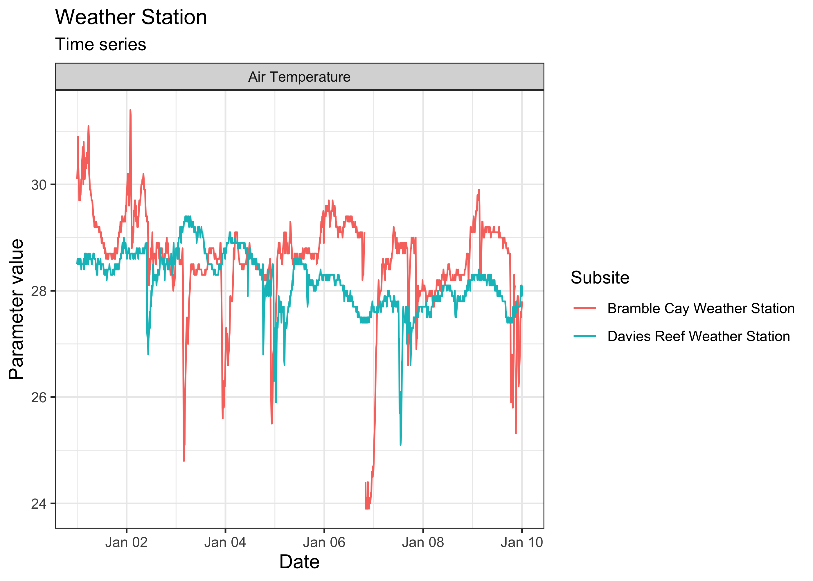
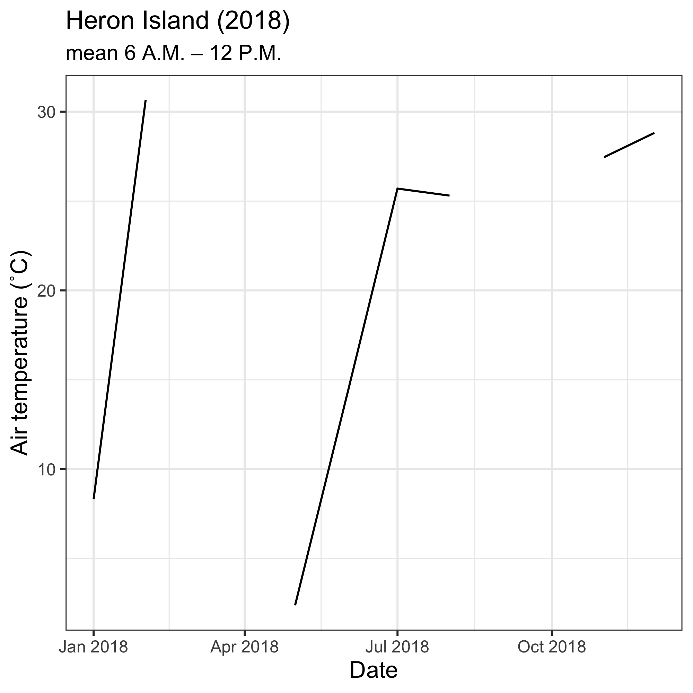

Please check our intro vignette first to implement the installation requirements, and to learn the general approach to navigating the different datasets. This vignette assumes you have obtained an AIMS Data Platform API Key.
As per the installation instructions, we strongly suggest that you hide your API Key permanently in your .Renviron file and set the object my_api_key to NULL in the chunk below. You can read more about why that is important here.
# set my_api_key to NULL after successfully placing it in .Renviron
my_api_key <- NULLLet’s start by loading the packages needed for this vignette:
The AIMS Weather Station dataset consists of a series of “parameters” that are measured at multiple sites. Those could be, for instance, minimum wind speed, peak wave period, wind direction, water pressure, dissolved oxygen, chlorophyll concentration, etc. Not all parameters are measured for all sites and at all times. Some loggers are still actively collecting data, others have been discontinued.
Essentially, for the user who has limited knowledge about where the data are, and of what they are consisted, they would need to do some prior exploration to learn more about what can downloaded. Suppose the goal is to download all time-series from a particular site. The general procedure would be:
aims_data
ggplot2 to create an exploratory time-series chartFor all datasets, a list of available filters can be retrieved with the function aims_expose_attributes. Knowing the filters is important because some time series are quite extensive, with parameters being measured at very high frequency (e.g. every 5 minutes), so downloading the dataset for an entire year or more my take quite some time (it’s possible though if that is the true goal of the user).
aims_expose_attributes("weather")
#> $summary
#> [1] NA
#>
#> $filters
#> [1] "site" "subsite" "series" "series_id" "parameter" "size" "min_lat" "max_lat" "min_lon" "max_lon" "from_date" "thru_date" "version" "cursor"In the Sea Water Temperature Loggers dataset, as demonstrated in our intro vignette, we have a convenience summary method which facilitates learning more about what data is available. The back-end for this is currently being developed for the AIMS Weather Station as well. In the meantime, to explore the AIMS Weather Station dataset, we use the function aims_filter_values. This function takes a target dataset and a given filter, and returns all the available information regarding the filter. We recommend exploring the series filter—a series is a continuing time-series, i.e. a collection of deployments measuring the same parameter (e.g. air temperature, air pressure, chlorophyll) at the same subsite. So, for a given site and parameter, there might exist multiple subsites and therefore series, in which case they are most likely distinguishable by depth.
head(aims_filter_values("weather", filter_name = "series"))
#> series_id series
#> 1 104918 Myrmidon Reef Weather Station Wind Speed (scalar avg b 10 min)
#> 2 100686 Saibai Island Weather Station Hail Duration
#> 3 266 Orpheus Island Relay Pole 3 Wind Direction (Vector Average 30 Minutes)
#> 4 2639 Hardy Reef Weather Station Wind Direction (Vector Standard 10 Minutes)
#> 5 10243 Raine Island Weather Station Air Temperature
#> 6 258 Orpheus Island Relay Pole 3 Wind Speed (Scalar avg 10 min)The benefits to choosing a data series is that it comes from one location and parameter type, making the data easy to plot. If we did not choose a data series from the AIMS Weather Station dataset, we would have to specify additional arguments to ensure the data is downloaded as expected.
Our values and filters might look like the following:
| Variable | Value | Description |
|---|---|---|
| series_id | 64 | Found here, Davies Reef Air Temperature data series |
| from_date | “2018-01-01” | We want to start charting on 1/1/2018 |
| thru_date | “2018-01-10” | We are plotting 10 days of data |
After deciding on query parameters, we plug the series id into a aims_data function:
davies <- aims_data("weather", api_key = my_api_key,
filters = list(series_id = 64,
from_date = "2018-01-01",
thru_date = "2018-01-10"))We can even visually compare multiple series at once. For instance, let’s compare the air temperature data from Davies Reef and Bramble Cay for the same period of time:
target_series <- c("Davies Reef" = 64, "Bramble Cay" = 87929)
aims_data_per_series <- function(series_number, my_api_key, ...) {
aims_data("weather", api_key = my_api_key,
filters = list(series_id = series_number, ...))
}
results <- purrr::map(target_series, aims_data_per_series,
my_api_key = my_api_key,
from_date = "2018-01-01",
thru_date = "2018-01-10")
weather_data <- purrr::map_dfr(results, rbind)
plot(weather_data, ptype = "time_series")
One could also download data for a particular time of day throughout the year, e.g. for Heron Island Relay Pole 8 at 5.4 m of depth (series 10394):
days <- seq(as.Date("2018-01-01"), as.Date("2018-12-31"), by = "month")
out <- numeric(length = length(days))
for (i in seq_along(days)) {
hour_in <- paste0(days[i], "T06:00:00")
hour_out <- paste0(days[i], "T12:00:00")
df <- aims_data("weather",
api_key = my_api_key,
filters = list(series_id = 10394,
from_date = hour_in,
thru_date = hour_out))
out[i] <- mean(df$qc_val)
}
ggplot(data = data.frame(date = days, temps = out)) +
geom_line(mapping = aes(x = date, y = temps)) +
labs(x = "Date",
y = "Air temperature (˚C)",
title = "Heron Island (2018)",
subtitle = "mean 6 A.M. – 12 P.M.") +
theme_bw() +
theme(axis.title.x = element_text(size = 12),
axis.title.y = element_text(size = 12),
legend.position = "bottom")
purrr::map_chr(results, aims_citation) %>%
unlist %>%
unname
#> [1] "Australian Institute of Marine Science (AIMS). 2009, Australian Institute of Marine Science Automatic Weather Stations, https://doi.org/10.25845/5c09bf93f315d, accessed 18 March 2021. Time period: 2018-01-01 to 2018-01-10. Series: Davies Reef Weather Station Air Temperature"
#> [2] "Australian Institute of Marine Science (AIMS). 2009, Australian Institute of Marine Science Automatic Weather Stations, https://doi.org/10.25845/5c09bf93f315d, accessed 18 March 2021. Time period: 2018-01-01 to 2018-01-10. Series: Bramble Cay Weather Station Air Temperature"